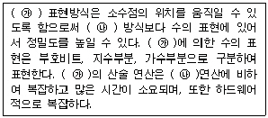
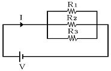
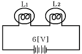
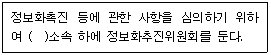
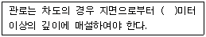

정보기기운용기능사 (2009-03-29 기출문제)
1과목: 전산 기초 이론
1. 다음 CPU의 4가지 기능에 관한 설명 중 옳지 않은 것은?
- 프로그램에 따라 인스트럭션이 수행되도록 PC를 관리하며 인스트럭션 해독, 그 실행을 반복하도록 하는 기능이 제어기능이다.
- 연산장치와 레지스터 사이의 신호 회선을 통해 자료가 전달되는 기능이 전달기능이다.
- 연산장치는 연산기능을 실행하며, 수치연산과 논리연산을 실행한다.
- 기억기능을 실행하는 요소를 레지스터라고 하며 과거에 사용한 자료를 영구적으로 기억한다.
(정답률: 78%)

2. 컴퓨터에서 입/출력의 동작 속도는 중앙연산처리의 동작보다 느리다. 이 동작 속도의 차에 의한 유휴시간을 줄이기 위하여 중앙처리장치와 입/출력 사이에 설치한 장치는 무엇인가?
- 채널(channel) 제어장치
- 인덱스 레지스터(index register)
- 디스플레이(display) 장치
- 병렬연산장치
(정답률: 82%)
3. 순서도(flowchart) 작성에 대한 설명으로 옳지 않은 것은?
- 사용하는 언어에 따라 기호 형태가 다르다.
- 프로그램 보관시 자료가 된다.
- 프로그램 갱신 및 유지 관리가 용이하다.
- 오류 수정(Debugging)이 용이하다.
(정답률: 84%)
4. 1945년 Von Neumann이 계산기에 기억장치를 설치하고 여기에 프로그램과 데이터를 저장한 다음 저장된 내용을 제어장치가 차례로 명령어를 하나씩 읽어내어 해독하고, 해독된 내용에 따라 데이터를 처리하여 그 결과를 출력장치로 보내어 문제를 처리한다는 프로그램 내장방식을 제창하였다. 이 프로그램 내장방식의 최초 컴퓨터는?
- UNIVAC 1
- EDSAC
- ENIAC
- ABC
(정답률: 74%)
5. 운영체제는 제어프로그램과 처리프로그램으로 나누는데, 다음 중 제어프로그램이 아닌 것은?
- 감시(supervisor) 프로그램
- 작업 제어(job control) 프로그램
- 데이터 관리(data management) 프로그램
- 사용자 서비스 (user service)프로그램
(정답률: 84%)
6. 프로그래밍 언어 중 저급 언어(low level language)에 속하는 것은?
- 어셈블리 언어
- 객체 지향 언어
- 비주얼 언어
- 비절차 언어
(정답률: 85%)
7. 연산장치에 대한 설명 중 틀린 것은?
- 산술 및 논리연산을 수행한다.
- 레지스터에 기억된 데이터들을 입력으로 받아 연산을 수행한다.
- 연산결과에 대한 정보를 출력장치로 보낸다.
- 연산 수행에 필요한 제어신호는 제어장치에서 통제한다.
(정답률: 60%)
8. 불 대수의 기본 정리 중 옳지 않은 것은?
- X + 0 = X
- X · 0 = X
- X + 1 = 1
- X · 1 = X
(정답률: 75%)
9. 다음 중 입/출력 장치 중 하드-카피(hard-copy)와 가장 관계 깊은 것은?
- 복사기
- 콘솔(consol)
- 음극선관(CRT)
- 라인프린터(Line Printer)
(정답률: 59%)
10. 다음 ( )안에 적합한 용어는?

- ㉮ : 팩 10진수, ㉯ : 언팩 10진수
- ㉮ : 부동 소수점, ㉯ : 고정 소수점
- ㉮ : 부동 소수점, ㉯ : 팩 10진수
- ㉮ : 10진 데이터, ㉯ : 고정 소수점
(정답률: 82%)
2과목: 정보 기기 운용
11. 다음 중 바이러스가 주는 피해 형태가 아닌 것은?
- 운영체제 파괴
- 프로그램의 실행속도 저하
- CD(Compact Disk)에 저장된 데이터 파괴
- 부팅 불능 상태
(정답률: 72%)
12. MS-DOS에서 “DIR" 명령으로 확인할 수 없는 것은?
- 파일의 크기
- 파일명
- 파일을 만든 일자
- 메모리 용량
(정답률: 75%)
13. 문자나 도형 등의 메시지를 컴퓨터를 이용해 전기적으로 송/수신 하는 것은?
- 스캐너
- 프린터
- 전자우편
- 마우스
(정답률: 74%)
14. 다음 중 2[J]과 같은 것은?
- 2[W · sec]
- 2[kg · m]
- 2[cal]
- 2[N · sec]
(정답률: 67%)
15. MIS(경영정보시스템) 도입의 궁극적인 목적으로 가장 적합한 것은?
- 통신망의 보편화
- 정보처리기기의 대량 보급
- 여성 근로자 고용 확대
- 기업의 효율성과 생산성 향상
(정답률: 82%)
16. 시간에 따라 크기와 방향이 주기적으로 바뀌는 전압 또는 전류를 나타낸 것은?
- 직류
- 교류
- 맥류
- 와전류
(정답률: 79%)
17. 단일장치로부터의 요구에 따라 정보센터가 통신망을 통하여 사용자에게 정보를 제공하는 것으로서 양방향통신 기능을 갖는 회화형 화상 정보서비스는?
- 비디오텍스
- 텔레텍스트
- 워드프로세서
- 텔렉스
(정답률: 64%)
18. 컴퓨터 바이러스의 예방 수칙과 거리가 먼 것은?
- 불법 복제 소프트웨어는 사용하지 않는다.
- 바이러스가 감염된 파일을 백업해 둔다.
- 백신 프로그램을 수시로 갱신한다.
- 신종 바이러스에 대한 예방법을 자세히 알아둔다.
(정답률: 86%)
19. USB 저장장치에 대한 설명으로 틀린 것은?
- PC와 주변장치를 접속하는 버스 규격이다.
- 소형 경량이어서 휴대용 저장장치로 각광을 받고 있다.
- 병렬 버스 형태로 구성되어 있다.
- USB는 Universal Serial Bus의 약자이다.
(정답률: 67%)
20. 다음 중 정현파(사인파)의 주파수가 20[Hz]일 때 이 파형의 주기(T)는 몇 [sec] 인가?
- 0.⑤
- 0.1
- 0.15
- 0.2
(정답률: 59%)
21. 다음 회로의 합성저항 R은 얼마인가? (단, R1=R2=R3=9[Ω])

- R = 1[Ω]
- R = 2[Ω]
- R = 3[Ω]
- R = 9[Ω]
(정답률: 72%)
22. 다음 중 CATV의 주 구성이 아닌 것은?
- 분배 전송로
- 가입 단말장치
- 헤드 엔드
- 화상 응답기기
(정답률: 62%)
23. 스팸(spam) 메일로 인한 피해 사례라고 볼 수 없는 것은?
- 시간낭비
- 자원낭비 및 시스템 손상
- 정상적인 메일 수신 장애
- 충분한 정보의 제공
(정답률: 83%)
24. 다음 화상 통신기기 중 특정의 수신자에게만 서비스하는 것을 목적으로 한 폐회로 텔레비전은?
- CATV
- CCTV
- HDTV
- VIDEOTEX
(정답률: 63%)
25. 그림과 같이 6[V]의 전지 양단에 내부저항이 4[Ω]인 전등 L1과 내부저항이 2[Ω]인 전등 L2를 접속하였을 때 전등 L1에서 소모되는 전력은?

- 1[W]
- 2[W]
- 4[W]
- 6[W]
(정답률: 50%)
26. 컴퓨터 사용자가 작성한 데이터 등을 보조기억장치에 물리적으로 저장한 형태를 무엇이라 하는가?
- 디스켓
- 컴파일러
- 프로세서
- 파일
(정답률: 60%)
27. 다음 중 전화기에서 송/수화기를 올려놓으면 절단(OFF) 상태이고 송/수화기를 들게 되면 개통(ON) 상태가 되어 신호를 보낼 수 있도록 하는 기능을 가진 것은?
- 훅스위치
- 축음방지회로
- 다이얼
- 유도코일
(정답률: 73%)
28. 논리연산의 기능 중 주기억장치에 기억되어 있는 데이터를 레지스터로 이동시키는 것을 무엇이라고 하는가?
- 스토어(store)
- 로드(load)
- 분기(branch)
- 비교(compare)
(정답률: 77%)
29. POS용 단말기를 가장 잘 설명한 것은?
- 일반적인 사무처리, 진료, 연구 등에 사용
- CCTV의 화면 전송 장치로 사용
- 주가나 상품거래에 대한 정보를 표시하는데 사용
- 바코드를 이용하여 상품의 판매시 금액의 집계나 현금관리 등에 사용
(정답률: 83%)
30. 다음 중 사무자동화(OA, Office Automation) 기기의 기능을 설명한 것으로 옳지 않은 것은?
- 팩시밀리 : 문서 및 도형의 작성
- 마이크로필름 : 정보의 저장과 검색
- 프린터, 복사기 : 정보의 출력과 복사
- 컴퓨터 : 문서, 그림, 계산 등의 처리
(정답률: 66%)
3과목: 정보 통신 일반
31. 다음 중 데이터의 암호화와 압축을 수행하는 OSI 참조 모델의 계층은?
- 응용 계층
- 표현 계층
- 세션 계층
- 전송 계층
(정답률: 70%)
32. 다음 중 데이터통신에서 발생하는 에러의 가장 주된 원인은?
- 충격성 잡음
- 산탄 잡음
- 백색 잡음
- 감쇠 잡음
(정답률: 63%)
33. 다음 중 전송 제어문자에서 ‘전송의 종료’를 뜻하는 것은?
- STX
- ACK
- EOT
- ETB
(정답률: 61%)
34. 전송채널의 출력 단에서 측정한 신호 전력이 100[mW] 잡음이 1[mW]인 경우 신호대 잡음비(S/N)는?
- 10[dB]
- 20[dB]
- 30[dB]
- 40[dB]
(정답률: 40%)
35. 다음 중 LAN과 외부의 서로 다른 네트워크를 상호 접속하는데 이용되는 것은?
- 트랜시버(Tranceiver)
- 변/복조기(Modem)
- 게이트웨이(Gateway)
- 리피터(Repeater)
(정답률: 74%)
36. PCM 통신방식의 표본화를 위한 샤논의 정리에 의하면 보내려는 신호 성분 중 최고 주파수의 최소 몇 배 이상으로 표본을 행하면 원 신호를 충분히 재현 시킬 수 있는가?
- 1배
- 2배
- 3배
- 4배
(정답률: 66%)
37. 교환방식에서 송/수신측 간에 논리적인 경로를 미리 설정한 후 그 경로를 따라 패킷을 전송하는 방식은?
- 가상회선방식
- 메시지교환방식
- 회선교환방식
- 회선패킷방식
(정답률: 41%)
38. 중앙의 컴퓨터를 중심으로 단말기들이 연결되는 정보통신망의 구성 형태는?
- 버스형(Bus type)
- 성형(Star type)
- 그물형(Mesh type)
- 나무형(Tree type)
(정답률: 73%)
39. 다음 중 광섬유 케이블의 기본적인 구조는?
- 철선과 고무절연물
- 동선과 PE피복
- 유리관과 폼스킨
- 코어와 클래드
(정답률: 74%)
40. 사용자가 네트워크나 컴퓨터를 의식하지 않고 장소에 상관없이 자유롭게 네트워크에 접속할 수 있는 정보통신 환경을 무엇이라 하는가?
- IPTV
- 블루투스(Bluetooth)
- RFID
- 유비쿼터스(Ubiquitous)
(정답률: 79%)
41. 데이터(Data)가 발생할 때마다 즉시 입력하여 그 처리결과를 얻는 방식은?
- 실시간처리
- 일괄처리
- 오프라인처리
- 다중화처리
(정답률: 86%)
42. 다음 중 보호시간(guard time)을 두어 채널 간 간섭을 줄여 주는 다중화 방식은?
- FDM
- TDM
- CDM
- SDM
(정답률: 55%)
43. 차세대 인터넷이라고 부르는 IPv6(Inter Protocol version 6)의 주소는 몇 비트인가?
- 16비트
- 32비트
- 64비트
- 128비트
(정답률: 76%)
44. 다음 중 디지털 전송방식에 적합한 변조 방식은?
- 주파수 변조
- 진폭 변조
- 펄스코드 변조
- 위상 변조
(정답률: 60%)
45. 데이터통신 시스템에서 데이터의 전송계에 속하지 않는 것은?
- 중앙처리장치
- 통신제어장치
- 전송회선
- 신호변환장치
(정답률: 68%)
46. 다음 중 정현파의 위상에 정보를 전송하는 방식으로 전송로 등에 의한 레벨 변동의 영향이 적은 것은?
- 위상편이변조(PSK)
- 주파수편이변조(FSK)
- 진폭편이변조(ASK)
- 직교변조(QAM)
(정답률: 56%)
47. 인터넷상에서 하이퍼텍스트를 전송하기 위한 프로토콜은?
- DDCMP
- SNMP
- HDLC
- HTTP
(정답률: 85%)
48. 다음 중 광섬유에 대한 일반적인 특성으로 틀린 것은?
- 주파수 대역폭이 넓다.
- 전송신호의 감쇠가 적다.
- 코어의 크기가 작고 무게가 가볍다.
- 간섭, 충격성 잡음, 누화 등에 민감하다.
(정답률: 69%)
49. 에러 검출 후 재전송(ARQ) 방식에 속하지 않는 것은?
- 정지-대기 ARQ
- 적응적 ARQ
- 연속적 ARQ
- 전진에러 ARQ
(정답률: 63%)
50. 통신 프로토콜에서 오류 수정을 위한 비트를 데이터에 부가하여 전송하고 수신측에서 오류 발생을 검출하고 수정하는 방식은?
- FEC
- ARQ
- BSC
- CRC
(정답률: 28%)
4과목: 정보 통신 업무 규정
51. 다음 ( ) 안에 들어갈 내용으로 가장 적합한 것은?

- 국무총리
- 지식경제부장관
- 교육과학기술부장관
- 방송통신위원회위원장
(정답률: 48%)
52. “전기통신을 행하기 위하여 계통적/유기적으로 연결/구성된 전기통신설비의 집합체”로 정의되는 것은?
- 전기통신망
- 정보통신설비
- 국선접속설비
- 전기통신회선
(정답률: 74%)
53. 단말장치의 전자파장해 방지기준 등은 어느 법령이 정하는 바에 의하는가?
- 전파에 관한 법령
- 전기통신에 관한 법령
- 정보화촉진에 관한 법령
- 전기통신사업에 관한 법령
(정답률: 65%)
54. 다음 중 정보통신공사업의 등록기준으로 적합하지 않은 것은?
- 자본금
- 사무실
- 기술능력
- 공사실적
(정답률: 77%)
55. 다음 중 ( ) 안에 들어갈 내용으로 가장 적합한 것은?

- 1
- 1.2
- 1.5
- 2
(정답률: 49%)
56. 다음 중 국내 전기통신사업의 구분으로 올바른 것은?
- 무선통신사업, 유선통신사업, 정보통신사업
- 공중통신사업, 자가통신사업, 기간통신사업
- 음성통신사업, 특수통신사업, 방송통신사업
- 기간통신사업, 별정통신사업, 부가통신사업
(정답률: 77%)
57. 다음 중 터널식 통신구 공사의 하자담보책임 기간으로 가장 적합한 것은?
- 1년
- 3년
- 5년
- 10년
(정답률: 60%)
58. 다음 중 정보통신서비스 제공자 및 이용자의 책무가 아닌 것은?
- 이용자의 개인정보를 보호하여야 한다.
- 정보이용능력의 향상에 이바지 하여야 한다.
- 건전한 정보사회가 정착되도록 노력하여야 한다.
- 정보통신망에서의 청소년 보호 등을 위한 활동을 지원하여야 한다.
(정답률: 64%)
59. 보편적 역무의 세부 내용 중 유선전화서비스에 속하지 않는 것은?
- 시내전화 서비스
- 시내공중전화 서비스
- 선박전화 서비스
- 도시통신 서비스
(정답률: 73%)
60. 전기통신에 관한 사항은 전기통신기본법 또는 다른 법률에 특별히 규정한 것을 제외하고는 누가 관장하는가?
- 국무총리
- 방송통신위원회
- 지식경제부장관
- KT(한국통신)사장
(정답률: 76%)